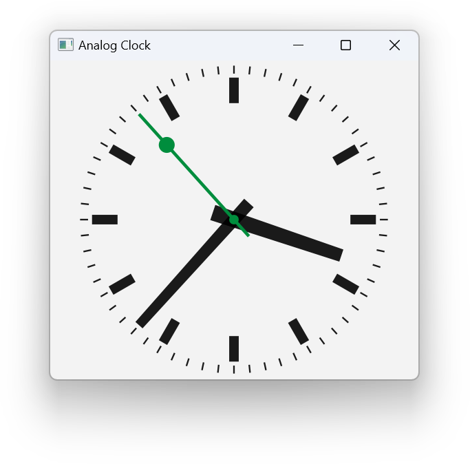
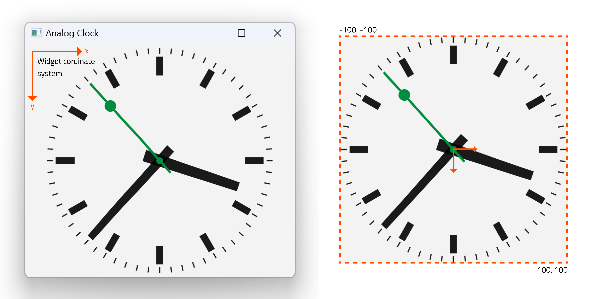

Analog Clock
The Analog Clock example shows how to draw the contents of a custom widget.

Screenshot of the Analog Clock example
This example also demonstrates how the transformation and scaling features of QPainter can be used to make drawing custom widgets easier.
AnalogClock Class Definition
The AnalogClock class provides a clock widget with hour, minute and second hands that is automatically updated every second. We subclass QWidget and reimplement the standard paintEvent() function to draw the clock face:
class AnalogClock : public QWidget { Q_OBJECT public: AnalogClock(QWidget *parent = nullptr); protected: void paintEvent(QPaintEvent *event) override; };
AnalogClock Class Implementation
When the widget is constructed, we set up a one-second timer to keep track of the current time, and we connect it to the standard update() slot so that the clock face is updated when the timer emits the timeout() signal. Finally, we resize the widget so that it is displayed at a reasonable size.
AnalogClock::AnalogClock(QWidget *parent) : QWidget(parent) { QTimer *timer = new QTimer(this); connect(timer, &QTimer::timeout, this, QOverload<>::of(&AnalogClock::update)); timer->start(1000); setWindowTitle(tr("Analog Clock")); resize(200, 200); }
The paintEvent() function is called whenever the widget's contents need to be updated. This happens when the widget is first shown, and when it is covered then exposed, but it is also executed when the widget's update() slot is called. Since we connected the timer's timeout() signal to this slot, it will be called at least once per second.
Before we set up the painter and draw the clock, we first define three lists of QPoints and three QColors that will be used for the hour, minute and second hands. We use the palette() function to get appropriate colors that fit into the rest of the window, both in light and dark mode. The hour and minute hands are drawn in the foreground color, the second hand is drawn in the accent color.
We also determine the length of the widget's shortest side so that we can fit the clock face inside the widget. It is also useful to determine the current time before we start drawing.
void AnalogClock::paintEvent(QPaintEvent *) { static const QPoint hourHand[4] = { QPoint(5, 14), QPoint(-5, 14), QPoint(-4, -71), QPoint(4, -71) }; static const QPoint minuteHand[4] = { QPoint(4, 14), QPoint(-4, 14), QPoint(-3, -89), QPoint(3, -89) }; static const QPoint secondsHand[4] = { QPoint(1, 14), QPoint(-1, 14), QPoint(-1, -89), QPoint(1, -89) }; const QColor hourColor(palette().color(QPalette::Text)); const QColor minuteColor(palette().color(QPalette::Text)); const QColor secondsColor(palette().color(QPalette::Accent)); int side = qMin(width(), height());
The contents of custom widgets are drawn with a QPainter. Painters can be used to draw on any QPaintDevice, but they are usually used with widgets, so we pass the widget instance to the painter's constructor.
QPainter painter(this);
QTime time = QTime::currentTime();
We call QPainter::setRenderHint() with QPainter::Antialiasing to turn on antialiasing. This makes drawing of diagonal lines much smoother.
painter.setRenderHint(QPainter::Antialiasing);
The translation moves the origin to the center of the widget, and the scale operation ensures that the following drawing operations are scaled to fit within the widget. We use a scale factor that let's us use x and y coordinates between -100 and 100, and that ensures that these lie within the length of the widget's shortest side.
painter.translate(width() / 2, height() / 2);
painter.scale(side / 200.0, side / 200.0);
To make our code simpler, we will draw a fixed size clock face that will be positioned and scaled so that it lies in the center of the widget.
The painter takes care of all the transformations made during the paint event, and ensures that everything is drawn correctly. Letting the painter handle transformations is often easier than performing manual calculations just to draw the contents of a custom widget.

We set the pen to be Qt::NoPen because we don't want any outline, and we use a solid brush with the color appropriate for displaying hours. Brushes are used when filling in polygons and other geometric shapes.
painter.setPen(Qt::NoPen);
painter.setBrush(hourColor);
We draw the hour hand first, using a formula that rotates the coordinate system counterclockwise by a number of degrees determined by the current hour and minute. This means that the hand will be shown rotated clockwise by the required amount. We save and restore the transformation matrix before and after the rotation because we want to place the minute hand without having to take into account any previous rotations.
painter.save();
painter.rotate(30.0 * ((time.hour() + time.minute() / 60.0)));
painter.drawConvexPolygon(hourHand, 4);
painter.restore();
We draw markers around the edge of the clock for each hour in the same color as the hour hand. We draw each marker then rotate the coordinate system so that the painter is ready for the next one.
for (int i = 0; i < 12; ++i) {
painter.drawRect(73, -3, 16, 6);
painter.rotate(30.0);
}
The minute hand is rotated and painted in a similar way to the hour hand.
painter.setBrush(minuteColor);
painter.save();
painter.rotate(6.0 * time.minute());
painter.drawConvexPolygon(minuteHand, 4);
painter.restore();
For the seconds hand we do the same and add two cicles as a visual highlight.
painter.setBrush(secondsColor);
painter.save();
painter.rotate(6.0 * time.second());
painter.drawConvexPolygon(secondsHand, 4);
painter.drawEllipse(-3, -3, 6, 6);
painter.drawEllipse(-5, -68, 10, 10);
painter.restore();
Finally, we draw markers around the edge of the clock, indicating minutes and seconds. This time we draw them as lines and therefore set the pen to the respective color.
painter.setPen(minuteColor);
for (int j = 0; j < 60; ++j) {
painter.drawLine(92, 0, 96, 0);
painter.rotate(6.0);
}